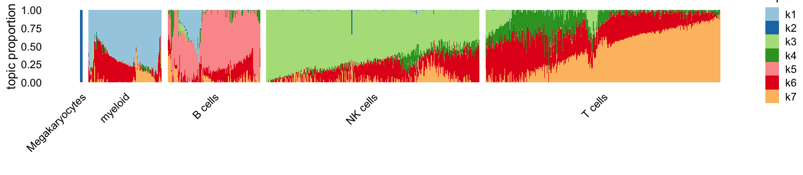

Last updated: 2025-07-01
Checks: 7 0
Knit directory:
fastTopics-experiments/analysis/
This reproducible R Markdown analysis was created with workflowr (version 1.7.1). The Checks tab describes the reproducibility checks that were applied when the results were created. The Past versions tab lists the development history.
Great! Since the R Markdown file has been committed to the Git repository, you know the exact version of the code that produced these results.
Great job! The global environment was empty. Objects defined in the global environment can affect the analysis in your R Markdown file in unknown ways. For reproduciblity it’s best to always run the code in an empty environment.
The command set.seed(1) was run prior to running the
code in the R Markdown file. Setting a seed ensures that any results
that rely on randomness, e.g. subsampling or permutations, are
reproducible.
Great job! Recording the operating system, R version, and package versions is critical for reproducibility.
Nice! There were no cached chunks for this analysis, so you can be confident that you successfully produced the results during this run.
Great job! Using relative paths to the files within your workflowr project makes it easier to run your code on other machines.
Great! You are using Git for version control. Tracking code development and connecting the code version to the results is critical for reproducibility.
The results in this page were generated with repository version 9168f5d. See the Past versions tab to see a history of the changes made to the R Markdown and HTML files.
Note that you need to be careful to ensure that all relevant files for
the analysis have been committed to Git prior to generating the results
(you can use wflow_publish or
wflow_git_commit). workflowr only checks the R Markdown
file, but you know if there are other scripts or data files that it
depends on. Below is the status of the Git repository when the results
were generated:
Ignored files:
Ignored: analysis/.sos/
Ignored: data/20news-bydate/
Ignored: data/droplet.RData
Ignored: data/nips_1-17.mat
Ignored: data/pbmc_68k.RData
Ignored: output/droplet/fits-droplet.RData
Ignored: output/droplet/lda-droplet.RData
Ignored: output/newsgroups/de-newsgroups.RData
Ignored: output/newsgroups/fits-newsgroups.RData
Ignored: output/newsgroups/lda-newsgroups.RData
Ignored: output/newsgroups/rds/
Ignored: output/nips/fits-nips.RData
Ignored: output/nips/lda-nips.RData
Ignored: output/pbmc68k/rds/
Untracked files:
Untracked: analysis/lda-eb-newsgroups-em-k=10.rds
Untracked: analysis/lda-eb-newsgroups-scd-ex-k=10.rds
Untracked: analysis/lda-newsgroups-em-k=10.rds
Untracked: analysis/lda-newsgroups-scd-ex-k=10.rds
Untracked: analysis/maptpx-newsgroups-em-k=10.rds
Untracked: analysis/maptpx-newsgroups-scd-ex-k=10.rds
Untracked: analysis/mcf7_cache/
Untracked: plots/
Note that any generated files, e.g. HTML, png, CSS, etc., are not included in this status report because it is ok for generated content to have uncommitted changes.
These are the previous versions of the repository in which changes were
made to the R Markdown (analysis/pbmc68k_more.Rmd) and HTML
(docs/pbmc68k_more.html) files. If you’ve configured a
remote Git repository (see ?wflow_git_remote), click on the
hyperlinks in the table below to view the files as they were in that
past version.
| File | Version | Author | Date | Message |
|---|---|---|---|---|
| Rmd | 9168f5d | Peter Carbonetto | 2025-07-01 | wflow_publish("pbmc68k_more.Rmd", verbose = T, view = F) |
| html | 399fc57 | Peter Carbonetto | 2024-08-13 | Built the pbmc68k_more workflowr page. |
| Rmd | e9a5583 | Peter Carbonetto | 2024-08-13 | workflowr::wflow_publish("pbmc68k_more.Rmd", verbose = TRUE) |
Here we take a closer look at some of the results on the 68K PBMC data.
Load the packages used in this analysis.
library(Matrix)
library(topicmodels)
library(fastTopics)
library(ggplot2)
library(cowplot)Load the 68K PBMC data.
load("../data/pbmc_68k.RData")
rm(counts)Load the topic models fit using the EM and CD algorithms
fit1 <- readRDS("../output/pbmc68k/rds/fit-pbmc68k-em-k=7.rds")$fit
fit2 <- readRDS("../output/pbmc68k/rds/fit-pbmc68k-scd-ex-k=7.rds")$fit
fit1 <- poisson2multinom(fit1)
fit2 <- poisson2multinom(fit2)and the LDA fits initialized using the EM and CD estimates:
lda1 <- readRDS("../output/pbmc68k/rds/lda-pbmc68k-em-k=7.rds")$lda
lda2 <- readRDS("../output/pbmc68k/rds/lda-pbmc68k-scd-ex-k=7.rds")$ldaThe MLEs and the approximate posterior estimates from LDA turn out to be very similar to each other, so there is really no need to examine both. Here we’ll focus on the MLEs:
cor(as.vector(fit1$L),as.vector(lda1@gamma))
cor(as.vector(fit2$L),as.vector(lda2@gamma))
# [1] 0.9471059
# [1] 0.9654844Let’s now examine the results using Structure plots. Here are the EM estimates:
L <- fit2$L
n <- nrow(L)
clusters <- rep("T cells",n)
names(clusters) <- rownames(fit2$L)
clusters[L[,3] > 0.4] <- "NK cells"
clusters[L[,1] > 0.3] <- "myeloid"
clusters[L[,5] > 0.2] <- "B cells"
clusters[L[,2] > 0.9] <- "Megakaryocytes"
clusters <- factor(clusters,
c("Megakaryocytes","myeloid","B cells","NK cells",
"T cells"))
n <- nrow(fit1$L)
rows <- c(sample(which(clusters == "T cells"),400),
sample(which(clusters != "T cells"),650))
fit1 <- select_loadings(fit1,rows)
fit2 <- select_loadings(fit2,rows)
k <- 7
topic_colors <- c("#a6cee3","#1f78b4","#b2df8a","#33a02c","#fb9a99",
"#e31a1c","#fdbf6f")
set.seed(1)
p1 <- structure_plot(fit1,grouping = clusters[rows],topics = 1:7,
colors = topic_colors,gap = 10)
ggtitle("EM without extrapolation") +
theme(plot.title = element_text(face = "plain",size = 10))
p1
| Version | Author | Date |
|---|---|---|
| 399fc57 | Peter Carbonetto | 2024-08-13 |
And here are the CD estimates:
p2 <- structure_plot(fit2,grouping = clusters[rows],topics = 1:7,
colors = topic_colors,gap = 10)
ggtitle("CD with extrapolation") +
theme(plot.title = element_text(face = "plain",size = 10))
p2
| Version | Author | Date |
|---|---|---|
| 399fc57 | Peter Carbonetto | 2024-08-13 |
The most striking difference is the greater promenance of topic 6 (red).
Let’s now extract some “driving genes” for a few selected topics by taking genes that are at higher expression in the given topic compared to the other topics. For example, some of the top driving genes for topic 1 suggest myeloid cells (e.g., S100A8, S100A9):
k <- 1
dat <- data.frame(gene = genes$symbol,
f0 = apply(fit2$F[,-k],1,max),
f1 = fit1$F[,k],
f2 = fit2$F[,k])
dat <- transform(dat,lfc = log2(f2/f0))
subset(dat,lfc > 4 & f2 > 0.001)
# gene f0 f1 f2 lfc
# ENSG00000163220 S100A9 3.658675e-18 0.004101862 0.004143481 50.008444
# ENSG00000143546 S100A8 3.658675e-18 0.002850460 0.002879382 49.483359
# ENSG00000204482 LST1 1.225331e-04 0.005464021 0.005506292 5.489838
# ENSG00000204472 AIF1 1.647450e-04 0.006086946 0.006151222 5.222566
# ENSG00000126759 CFP 2.860184e-05 0.001149577 0.001162555 5.345047
# ENSG00000085265 FCN1 3.658675e-18 0.001976919 0.001996978 48.955418
# ENSG00000090382 LYZ 3.658675e-18 0.006543255 0.006609647 50.682173
# ENSG00000197249 SERPINA1 4.840894e-06 0.001345175 0.001358822 8.132868
# ENSG00000197766 CFD 3.658675e-18 0.001736280 0.001753897 48.768164
# ENSG00000216490 IFI30 1.338963e-05 0.001119325 0.001131379 6.400823
# ENSG00000025708 TYMP 1.146609e-04 0.001830871 0.001872341 4.029397The top driving genes for topic 5 suggest B cells (e.g., CD79A, CD19):
k <- 5
dat <- data.frame(gene = genes$symbol,
f0 = apply(fit2$F[,-k],1,max),
f1 = fit1$F[,k],
f2 = fit2$F[,k])
dat <- transform(dat,lfc = log2(f2/f0))
subset(dat,lfc > 10 & f2 > 0.0001)
# gene f0 f1 f2 lfc
# ENSG00000132185 FCRLA 3.658675e-18 0.0001962006 0.0001960767 45.60709
# ENSG00000163687 DNASE1L3 3.658675e-18 0.0001064082 0.0001063410 44.72437
# ENSG00000132465 IGJ 3.658675e-18 0.0006496942 0.0006492841 47.33452
# ENSG00000170476 MZB1 3.658675e-18 0.0005379152 0.0005375756 47.06214
# ENSG00000241106 HLA-DOB 3.658675e-18 0.0002418521 0.0002416994 45.90889
# ENSG00000168081 PNOC 3.658675e-18 0.0001780743 0.0001779618 45.46724
# ENSG00000184709 LRRC26 3.658675e-18 0.0001030515 0.0001029864 44.67813
# ENSG00000095585 BLNK 3.658675e-18 0.0001270521 0.0001269718 44.98018
# ENSG00000156738 MS4A1 3.658675e-18 0.0008338106 0.0008332842 47.69448
# ENSG00000100721 TCL1A 3.658675e-18 0.0012611217 0.0012603256 48.29140
# ENSG00000253701 AL928768.3 3.658675e-18 0.0003640369 0.0003638071 46.49885
# ENSG00000247982 LINC00926 3.658675e-18 0.0003821632 0.0003819219 46.56895
# ENSG00000177455 CD19 3.658675e-18 0.0001617942 0.0001616920 45.32892
# ENSG00000104921 FCER2 3.658675e-18 0.0002896854 0.0002895025 46.16925
# ENSG00000105369 CD79A 3.658675e-18 0.0028936650 0.0028918385 49.48959
# ENSG00000269404 SPIB 3.658675e-18 0.0003084831 0.0003082883 46.25995
# ENSG00000254709 IGLL5 3.658675e-18 0.0017324059 0.0017313124 48.74947
# ENSG00000128218 VPREB3 3.658675e-18 0.0003151965 0.0003149975 46.29101
# ENSG00000099958 DERL3 3.658675e-18 0.0001495421 0.0001494477 45.21531The top driving genes for topic 3 suggest natural killer (NK) cells (e.g., NKG7, GNLY):
k <- 3
dat <- data.frame(gene = genes$symbol,
f0 = apply(fit2$F[,-k],1,max),
f1 = fit1$F[,k],
f2 = fit2$F[,k])
dat <- transform(dat,lfc = log2(f2/f0))
subset(dat,lfc > 4 & f2 > 0.001)
# gene f0 f1 f2 lfc
# ENSG00000115523 GNLY 3.658675e-18 0.015808531 0.015202766 51.883862
# ENSG00000137441 FGFBP2 3.658675e-18 0.001855115 0.001784029 48.792739
# ENSG00000145649 GZMA 1.180503e-04 0.003478113 0.003409834 4.852228
# ENSG00000169583 CLIC3 3.184806e-05 0.001393214 0.001336228 5.390816
# ENSG00000180644 PRF1 2.631073e-05 0.001433384 0.001381024 5.713943
# ENSG00000100450 GZMH 3.658675e-18 0.002288307 0.002200621 49.095511
# ENSG00000100453 GZMB 3.658675e-18 0.003223107 0.003099601 49.589683
# ENSG00000077984 CST7 8.545444e-05 0.003252106 0.003141172 5.200003
# ENSG00000105374 NKG7 3.658675e-18 0.012121078 0.011656612 51.500677Topic 2 is less clear, but perhaps relates to megakaryocytes (e.g., PF4):
k <- 2
dat <- data.frame(gene = genes$symbol,
f0 = apply(fit2$F[,-k],1,max),
f1 = fit1$F[,k],
f2 = fit2$F[,k])
dat <- transform(dat,lfc = log2(f2/f0))
subset(dat,lfc > 10 & f2 > 0.001)
# gene f0 f1 f2 lfc
# ENSG00000171848 RRM2 8.244439e-19 0.001064246 0.001026667 50.14540
# ENSG00000187699 C2orf88 8.244439e-19 0.001076621 0.001038605 50.16207
# ENSG00000168497 SDPR 8.244439e-19 0.007816845 0.007540828 53.02215
# ENSG00000088726 TMEM40 8.244439e-19 0.001319995 0.001273385 50.45610
# ENSG00000169704 GP9 8.244439e-19 0.003316487 0.003199380 51.78522
# ENSG00000163737 PF4 8.244439e-19 0.011009582 0.010620828 53.51625
# ENSG00000163736 PPBP 8.244439e-19 0.033267996 0.032093286 55.11163
# ENSG00000113140 SPARC 8.244439e-19 0.003308237 0.003191421 51.78163
# ENSG00000124491 F13A1 8.244439e-19 0.001010377 0.001038604 50.16207
# ENSG00000180573 HIST1H2AC 8.244439e-19 0.010073211 0.009717520 53.38802
# ENSG00000124635 HIST1H2BJ 8.244439e-19 0.001187995 0.001146045 50.30409
# ENSG00000161911 TREML1 8.244439e-19 0.002804989 0.002705943 51.54356
# ENSG00000171611 PTCRA 8.244439e-19 0.004855106 0.004683670 52.33507
# ENSG00000223855 AC147651.3 8.244439e-19 0.001357120 0.001309199 50.49611
# ENSG00000127920 GNG11 8.244439e-19 0.009041965 0.008722688 53.23220
# ENSG00000120885 CLU 8.244439e-19 0.008353093 0.008058140 53.11788
# ENSG00000236304 AP001189.4 8.244439e-19 0.001538619 0.001484290 50.67720
# ENSG00000111644 ACRBP 8.244439e-19 0.004673607 0.004508579 52.28010
# ENSG00000165682 CLEC1B 8.244439e-19 0.001047746 0.001010749 50.12285
# ENSG00000102804 TSC22D1 8.244439e-19 0.003844485 0.003708733 51.99835
# ENSG00000166091 CMTM5 8.244439e-19 0.002664740 0.002570646 51.46956
# ENSG00000166803 KIAA0101 8.244439e-19 0.001355746 0.001679276 50.85527
# ENSG00000131153 GINS2 8.244439e-19 0.001187881 0.001146045 50.30409
# ENSG00000005961 ITGA2B 8.244439e-19 0.002495615 0.002407494 51.37496
# ENSG00000167900 TK1 8.244439e-19 0.001493244 0.001440516 50.63401
# ENSG00000176890 TYMS 8.244439e-19 0.001596369 0.001540000 50.73036
# ENSG00000101335 MYL9 8.244439e-19 0.002875114 0.002773592 51.57918
# ENSG00000101162 TUBB1 8.244439e-19 0.003959985 0.003820155 52.04106
# ENSG00000184113 CLDN5 8.244439e-19 0.001988242 0.001918036 51.04706Topic 6, the topic that is most different between the EM and CD estimates, appears to be capturing a “baseline” expression level. This includes ribosomal protein genes, which account for a large fraction of the total expression in this data set, and don’t capture any “interesting” structure.
k <- 6
dat <- data.frame(gene = genes$symbol,
f0 = apply(fit2$F[,-k],1,max),
f1 = fit1$F[,k],
f2 = fit2$F[,k])
dat <- transform(dat,lfc = log2(f2/f0),r21 = f2/f1)
subset(dat,lfc > 0.5 & f2 > 0.005)
# gene f0 f1 f2 lfc r21
# ENSG00000142937 RPS8 0.006212607 0.007282610 0.009452406 0.6054827 1.297942
# ENSG00000171863 RPS7 0.005103906 0.006529843 0.007528874 0.5608325 1.152995
# ENSG00000143947 RPS27A 0.006723131 0.008274633 0.010216551 0.6037030 1.234683
# ENSG00000168028 RPSA 0.003996081 0.006059185 0.006866905 0.7810739 1.133305
# ENSG00000188846 RPL14 0.005299126 0.006768258 0.007777698 0.5535889 1.149143
# ENSG00000182899 RPL35A 0.004289314 0.004887549 0.006240801 0.5409843 1.276877
# ENSG00000163682 RPL9 0.005517871 0.006043094 0.007906552 0.5189369 1.308362
# ENSG00000109475 RPL34 0.006583338 0.007406409 0.009832636 0.5787590 1.327585
# ENSG00000164587 RPS14 0.009615048 0.011499182 0.015354971 0.6753398 1.335310
# ENSG00000231500 RPS18 0.009480947 0.014997337 0.018356074 0.9531545 1.223956
# ENSG00000198755 RPL10A 0.005820401 0.006879194 0.008766827 0.5909361 1.274397
# ENSG00000156508 EEF1A1 0.004581784 0.006090634 0.007081075 0.6280589 1.162617
# ENSG00000112306 RPS12 0.007329941 0.009894959 0.013415214 0.8719966 1.355762
# ENSG00000198034 RPS4X 0.011496567 0.014915339 0.017746177 0.6263052 1.189794
# ENSG00000147403 RPL10 0.014871444 0.021420213 0.024814561 0.7386422 1.158465
# ENSG00000137154 RPS6 0.013645329 0.016713112 0.021149907 0.6322442 1.265468
# ENSG00000136942 RPL35 0.003344397 0.004645911 0.005430991 0.6994693 1.168983
# ENSG00000197958 RPL12 0.006380061 0.007971636 0.009766431 0.6142612 1.225148
# ENSG00000177600 RPLP2 0.006496343 0.007591369 0.010241558 0.6567354 1.349106
# ENSG00000166441 RPL27A 0.004811566 0.006516915 0.007933225 0.7214009 1.217328
# ENSG00000149273 RPS3 0.010058599 0.015101867 0.018217486 0.8568946 1.206307
# ENSG00000118181 RPS25 0.004734571 0.005359617 0.006793787 0.5209821 1.267588
# ENSG00000089009 RPL6 0.005969072 0.007889148 0.009177513 0.6205967 1.163309
# ENSG00000089157 RPLP0 0.003910155 0.005630981 0.006419673 0.7152742 1.140063
# ENSG00000133112 TPT1 0.004401657 0.005584376 0.006232404 0.5017421 1.116043
# ENSG00000137818 RPLP1 0.007683192 0.009954931 0.011870655 0.6276218 1.192440
# ENSG00000140988 RPS2 0.016451406 0.024278162 0.029134934 0.8245392 1.200047
# ENSG00000167526 RPL13 0.018347801 0.024632966 0.031966430 0.8009505 1.297709
# ENSG00000161970 RPL26 0.004613366 0.006136206 0.007274305 0.6569896 1.185473
# ENSG00000198242 RPL23A 0.005460498 0.008053744 0.009302257 0.7685482 1.155023
# ENSG00000108298 RPL19 0.009078556 0.011152563 0.013661245 0.5895543 1.224942
# ENSG00000115268 RPS15 0.005863653 0.006905223 0.008340809 0.5083877 1.207899
# ENSG00000105640 RPL18A 0.009469537 0.011050546 0.013491073 0.5106392 1.220851
# ENSG00000105193 RPS16 0.004297136 0.005087433 0.006463933 0.5890368 1.270569
# ENSG00000105372 RPS19 0.007791512 0.011259541 0.014157993 0.8616415 1.257422
# ENSG00000063177 RPL18 0.005866878 0.007475159 0.009252083 0.6571851 1.237710
# ENSG00000142541 RPL13A 0.014060044 0.019979209 0.024286719 0.7885665 1.215600
# ENSG00000170889 RPS9 0.005723394 0.007022134 0.009275166 0.6965022 1.320847
# ENSG00000108107 RPL28 0.004654791 0.006365727 0.007340847 0.6572300 1.153183
# ENSG00000100316 RPL3 0.012288336 0.015768331 0.020156959 0.7139884 1.278319
sessionInfo()
# R version 4.3.3 (2024-02-29)
# Platform: aarch64-apple-darwin20 (64-bit)
# Running under: macOS 15.5
#
# Matrix products: default
# BLAS: /Library/Frameworks/R.framework/Versions/4.3-arm64/Resources/lib/libRblas.0.dylib
# LAPACK: /Library/Frameworks/R.framework/Versions/4.3-arm64/Resources/lib/libRlapack.dylib; LAPACK version 3.11.0
#
# locale:
# [1] en_US.UTF-8/en_US.UTF-8/en_US.UTF-8/C/en_US.UTF-8/en_US.UTF-8
#
# time zone: America/Chicago
# tzcode source: internal
#
# attached base packages:
# [1] stats graphics grDevices utils datasets methods base
#
# other attached packages:
# [1] cowplot_1.1.3 ggplot2_3.5.0 fastTopics_0.7-25 topicmodels_0.2-16
# [5] Matrix_1.6-5
#
# loaded via a namespace (and not attached):
# [1] tidyselect_1.2.1 viridisLite_0.4.2 dplyr_1.1.4
# [4] farver_2.1.1 fastmap_1.1.1 lazyeval_0.2.2
# [7] promises_1.2.1 digest_0.6.34 lifecycle_1.0.4
# [10] NLP_0.2-1 invgamma_1.1 magrittr_2.0.3
# [13] compiler_4.3.3 rlang_1.1.5 sass_0.4.9
# [16] progress_1.2.3 tools_4.3.3 utf8_1.2.4
# [19] yaml_2.3.8 data.table_1.17.4 knitr_1.45
# [22] prettyunits_1.2.0 labeling_0.4.3 htmlwidgets_1.6.4
# [25] plyr_1.8.9 xml2_1.3.6 Rtsne_0.17
# [28] workflowr_1.7.1 withr_3.0.2 purrr_1.0.2
# [31] grid_4.3.3 stats4_4.3.3 fansi_1.0.6
# [34] git2r_0.33.0 tm_0.7-13 colorspace_2.1-0
# [37] scales_1.3.0 gtools_3.9.5 cli_3.6.4
# [40] rmarkdown_2.26 crayon_1.5.2 ragg_1.2.7
# [43] generics_0.1.3 RcppParallel_5.1.10 httr_1.4.7
# [46] reshape2_1.4.4 pbapply_1.7-2 cachem_1.0.8
# [49] stringr_1.5.1 modeltools_0.2-23 parallel_4.3.3
# [52] vctrs_0.6.5 jsonlite_1.8.8 slam_0.1-50
# [55] hms_1.1.3 mixsqp_0.3-54 ggrepel_0.9.5
# [58] irlba_2.3.5.1 systemfonts_1.0.6 plotly_4.10.4
# [61] jquerylib_0.1.4 tidyr_1.3.1 glue_1.8.0
# [64] uwot_0.2.3 stringi_1.8.3 gtable_0.3.4
# [67] later_1.3.2 quadprog_1.5-8 munsell_0.5.0
# [70] tibble_3.2.1 pillar_1.9.0 htmltools_0.5.8.1
# [73] truncnorm_1.0-9 R6_2.5.1 textshaping_0.3.7
# [76] rprojroot_2.0.4 evaluate_1.0.3 lattice_0.22-5
# [79] highr_0.10 RhpcBLASctl_0.23-42 SQUAREM_2021.1
# [82] ashr_2.2-66 httpuv_1.6.14 bslib_0.6.1
# [85] Rcpp_1.0.12 whisker_0.4.1 xfun_0.42
# [88] fs_1.6.5 pkgconfig_2.0.3